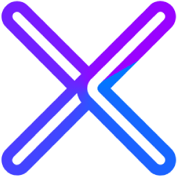

An open source, experimental cross-platform desktop wallet built for the upcoming Navio blockchain. Privacy-first. Community-driven.
Available for
All releases are open source and auditable on GitHub. Use at your own risk — this is alpha software.